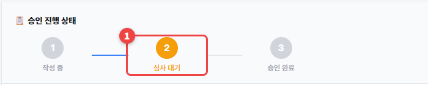
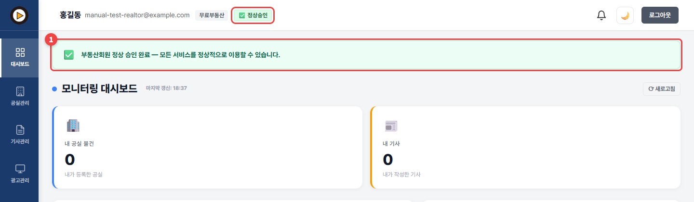
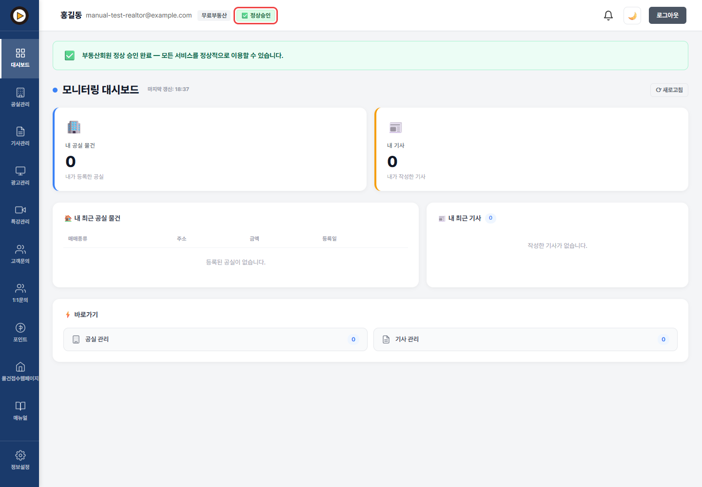

승인 확인하기
관리자가 서류를 확인하면 정상승인이 되고, 부동산회원 메뉴가 모두 열립니다.
1
신청하면 화면 위 이름 옆에 ⏳ 서류 검토중이 붙습니다. 관리자가 확인하는 중입니다.
2
정보설정 → 부동산정보의 승인 진행 상태도 심사 대기로 바뀝니다.

3
승인되면 ✅ 정상승인 표시와 함께 "부동산회원 정상 승인 완료" 안내가 나옵니다.

4
왼쪽에 광고관리, 고객문의, 물건접수웹페이지 같은 부동산회원 메뉴가 새로 생깁니다. 이제 공실을 올릴 차례입니다.

🚨 "서류 보완이 필요합니다"가 떴다면
[대시보드]에 반려 사유가 보입니다. 정보설정 → 부동산정보에서 고친 뒤 📋 수정 후 재심사 신청을 누르세요.
승인은 얼마나 걸리나요?
관리자가 서류를 확인하는 대로 처리합니다. 승인되면 화면 위에 바로 정상승인이 표시됩니다.